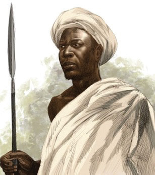

(f) Ukanda wa Kusini
Chifu Machemba alikuwa kiongozi mashuhuri wa kabila la Wayao katika Karne ya 19. Alijulikana sana kwa ujasiri wake katika kupinga ukoloni wa Wajerumani. Aliongoza wananchi wake kupinga juhudi za Wajerumani kutawala maeneo yao, hasa katika sehemu ambazo kwa sasa ni kusini mwa Tanzania. Katika miaka ya 1890 na 1891, Wajerumani walijaribu kumshawishi Chifu Machemba akubali utawala wao lakini alikataa. Wajerumani walimtumia Machemba barua wakimtaka atii mamlaka ya Wajerumani au akabiliane na vita. Machemba alijibu kwa barua akiwawakataa Wajerumani kwa maneno makali ya kizalendo, kishujaa na yenye uthabiti wa kuwalinda wananchi wake. Alitetea utu wa watu wake usitwezwe na Wajerumani. Mnamo mwaka 1886, Wajerumani walimvamia lakini aliwashinda na kwa muda wa miaka minne akawazuia kukusanya kodi katika himaya yake. Mwaka 1890 Wajerumani walivamia tena himaya yake na kufanikiwa kuiteka lakini hawakufanikiwa kumteka Chifu Machemba. Alifanikiwa kutoroka na kukimbilia Msumbiji.